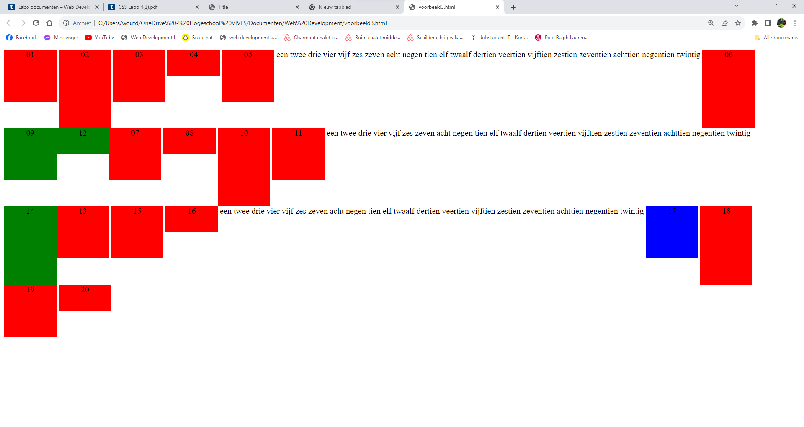
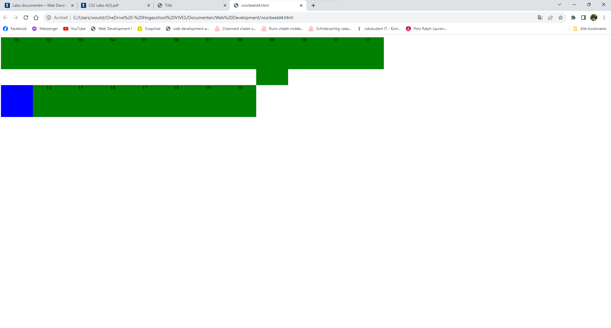

Opdracht 1
Inline-block element, wanneer mijn element deze opmaak krijgt, dan staan alle blokken naast elkaar
en wanneer er geen plaats meer is zullen ze verder gaan op de volgende rij, de blokken worden ook standaard aangepast aan de tekst die erin staat.
inline element: wanneer ik het element de opmaak inline geef dan staan alle blokjes naast elkaar en als er geen plaats meer is staan ze op de rij eronden
block element: wanneer ik de opmaak block meegeef dan komen alle elementen onder elkaar te staan.
Opdracht 2
De enters tussen de div-elementen tellen als witregels, dus daarom is er een witruimte.
Opdracht 3
De tekst in de DIVs wordt gecentreerd omdat in de css bij div text-align: center staat vertical-align:center werkt niet omdat dit niet bestaat Lijnt het midden van het element uit met de basislijn plus de helft van de x-hoogte van het bovenliggende element. een makkelijke manier om text horizontaal te centreren kan zijn met gebruik van padding bv: padding:70px 0; een manier om meerdere lijnen verticaal te centreren is : display: table-cell; vertical-align: middle; Deze klasse zal voorang krijgen.
Opdracht 4

Opdracht 5
